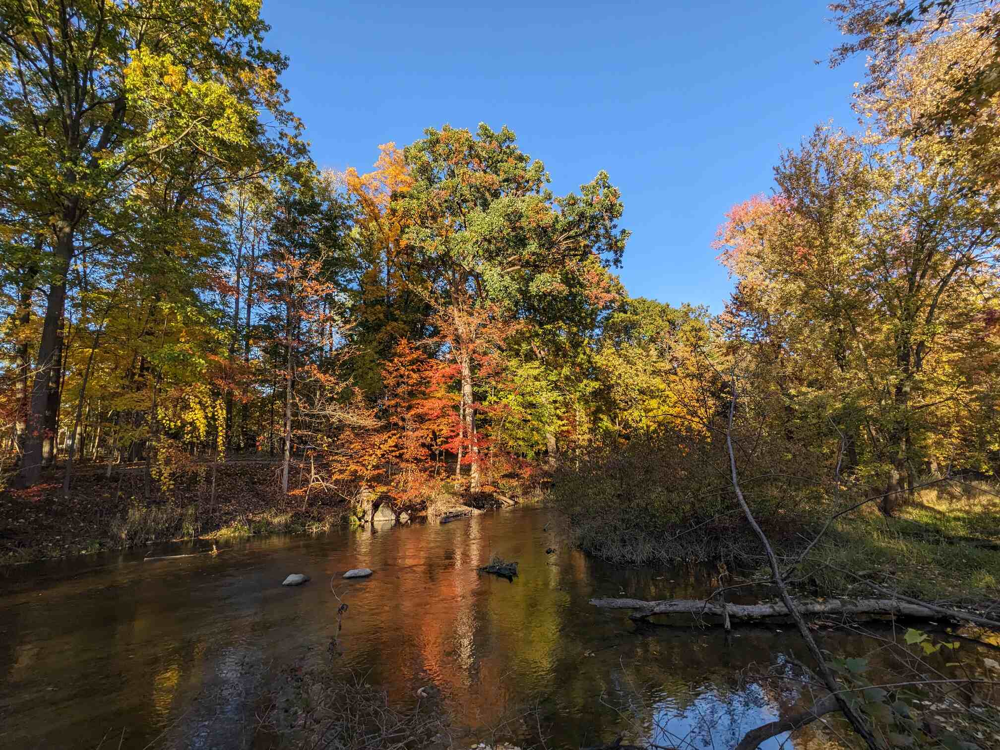

test
test
nightish
This one has a video at the end, just whatch that instead of reading this
I'm not one to go into nature a lot, I've always preferred pushing button on computer. About a month ago, my family and I ended up at a nature preserve in Indiana, just kinda walked around for a while. And oh boy it was lovely! I always forget how peaceful and interesting nature is. The sun was setting, it got dark, we're tripping over tree roots and saw a deer and it was so fun. The sounds also. Listening to nature is so good. The wind and the rustling of plants and the sounds animals make and the absense of digital and machinery sounds. Just the sounds of God's great land (I'm a staunch atheist btw)
Yesterday was the most perfectest Autumn day. It wasn't that chilly. A light cardigan did the trick. The sky was clear and blue, the sun was shining. Specifically onto the trees, who were at the peak of their color-changing beauty for the season. The bright colors glowed, especially that orange color. You know the one. Againt a blue sky they look crazy, the contrast and saturation there are so striking to me.
So after work I went to a local park. It's basically a loop in the woods made out of a wooden boardwalk sort of thing. It's a lovely little stroll. There's benches and picnic tables every so often. We once had a delicious MacDonal's breakfast out there once. About halfway through the loop, there were a few bikes chilling on the walk. A few kids jumped down from the path and walked down a little trail beaten in the dirt. They returned and biked off and I hopped down to go on that little trail. The land this park is on isn't very big, so I knew it wasn't going to go far. But i look out off the path and there were some really pretty trees where they started to clear up, so I walked over to those. That's where the river was. As I approached, the dirt got real squishy. There were a buncha downed trees so I just climbed on one and balanced from downed tree to downed tree until I got to the river. Is that what you call it? A downed tree? I said it so much now so I don't want to be wrong.
I chilled up on this tree for a lil bit, taking in the birds and the sound of the water and looking at these glowing trees and god damn it my cat is up on my turntable, TIMMY GET DOWN FROM THERE and it's just so perfect and peaceful out there. I noted that my tinnitus didn't bother me. It doesn't usually, but when it's quiet it can really get to me. but there was just enough ambient wind and water for it to be perfect. I didn't stay too long because my attention span is short, but if I had a guitar out there I could just sit on that tree for a long time. Maybe I'll do that some time.
I really need to get out into nature more and more, and I'm realizing it more and more now. Plus there's cool bugs out there ya know? and squirrels and they're so cute
I don't like having post titles that sound profound when the content isn't really that profound, but eh, what're'ya gonna do?